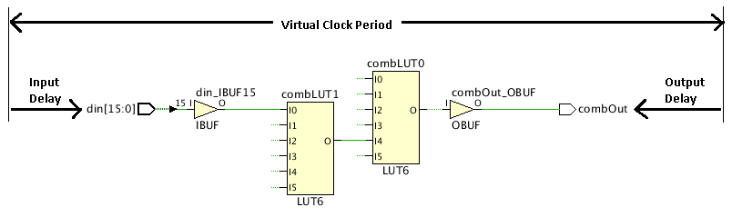

組み合わせ遅延の理解
図: 組み合わせパスの例 :

入力信号 din[15] が複数レベルの組み合わせロジックを通って、レジスタでラッチされずに出力ポートの combOut に到達します。デバイスを通る組み合わせ遅延は、ウィザードで定義された仮想クロックの周期からユーザーの提供する入力および出力遅延を引いたものになります。複数の遅延制約がポートに定義される場合は、最も困難なものだけが使用されます。次はその例です。
create_clock -period 10.0 -name virtual_clock set_input_delay -clock virtual_clock 1.0 [get_ports din[15]] -min set_input_delay -clock virtual_clock 3.0 [get_ports din[15]] -max set_output_delay -clock virtual_clock 2.0 [get_ports combOut] -min set_output_delay -clock virtual_clock 4.0 [get_ports combOut] -max
また、組み合わせパスはタイミング制約ウィザード外で set_max_delay および set_min_delay コマンドを使用しても制約付けることができます。
[Combinational Delays] ページの理解
- [Recommended Constraints] : タイミング制約ウィザードでは、組み合わせロジックを伝搬し、入力から出力まで順次ロジックを通らないパスに対して組み合わせ遅延が推奨されます。ウィザードでは、仮想クロック制約だけでなく、そのパスの入力および出力ポートに対する遅延も推奨されます。
- [Tcl Command Preview] : 組み合わせ遅延を定義するのに使用される Tcl コマンドが表示されます。これらの制約がデザインに追加されます。
- [Existing Constraints] : 現在定義されている制約を表示します。
上記のセクションにはそれぞれツールバーもあり、次のコマンドの 1 つまたは複数を実行できます
 |
Search | リストされている制約に対する検索文字列を入力するためのテキスト入力フィールドが表示されます。 |
 |
Select All | 制約すべてが選択されます。 |
 |
Edit selected row | 入力および出力遅延を定義する [Combinational Constraints] ダイアログ ボックスが開きます。これらの属性は、[Recommended Constraints] リストのフィールドを直接クリックしても編集できます。 |
 |
Report Clock Networks | [Report Clock Networks] コマンドを実行して、新しいクロック ネットワーク レポートが生成されます。 ヒント: クロック ネットワークは、[Clock Networks] ウィンドウにレポートされます。
|
関連項目
| 『UltraFast™ 設計手法ガイド (Vivado® Design Suite 用)』 (UG949) の「入力ポートおよび出力ポートの制約」 | |
| 『Vivado Design Suite ユーザー ガイド : 制約の使用』 (UG903) の「I/O 遅延の制約」 |